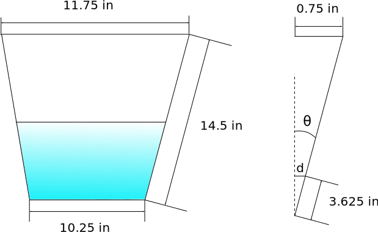

Link to Solar Thermal General Notes Page
The goal of this experiment is to practice setting up and running an experiment on my own in addition to trying to tie experimental results to theoretical learning.
This specific experiment will approximate the energy added to the bucket of water over the course of an hour.
(Collection of equations)
(Energy Harvested) =>
Need to do energy balances for control volumes to come up with some applicable theory
Bucket Volume Calculation
|  |
For the experiments I decided to only fill up the bucket halfway. I am going to approximate the water volume by determining the volume of a cylinder with a radius matching the radius of the bucket at half of the water height (1/4 overall height). Thus the volume can be calculated by the following steps:
- Determine the angle
from the side wall to vertical
- Determine the radius at the half height of the water
- Determine the vertical height of the water
- Solve the formula of volume of a cylinder
Slightly different result if halving the vertical height instead of the wall height
Will need a control test where just the bucket is used for the experiment
Collect
At beginning
- Voltage of batteries
- Make sure the water hits a specific line on the bucket (same volume)
During (5 min intervals)
- Water temp in bucket
- Current air temp
End
- Voltage of batteries